INICIO DETALLES BOCETOS MIEMBROS PLANIFICACION CONTACTO
Esta primera pagina permite a los usuarios de la aplicación realizar un inicio de sesión complementando los campos usuario y contraseña con los datos que han recibido por parte del administrador.
Este primer boceto muestra la vista que a la que accede un administrador nada mas iniciar sesión desde ella puede ver todos los ciclos educativos que existen en la institución. Desde esta pantalla el usuario puede Eliminar o Modificar los ciclos ya existentes, por ejemplo cambiando el nombre de estos o de la persona a cargo de ellos. También puede crear un nuevo ciclo haciendo click en el boton "Nuevo ciclo de enseñanza" Además el usuario puede hacer click en cualquiera de los ciclos lo que le redigirla a una pantlla en la que podrá llevar a cabo la gestión de estos.
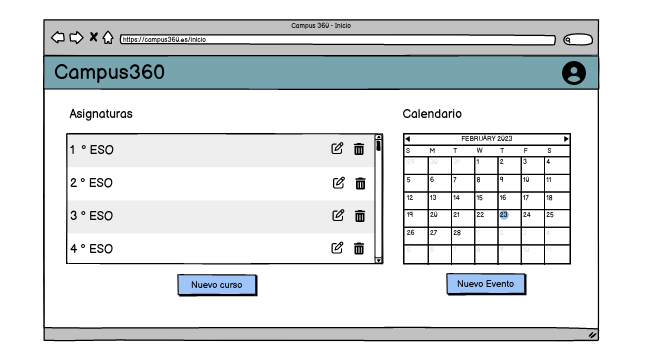Aquí vemos la gestión de los cursos contenidos en el ciclo Educación secundaria la gestión de estos sigue el mismo patrón que la gestión de ciclos explicada en la anterior diapositiva
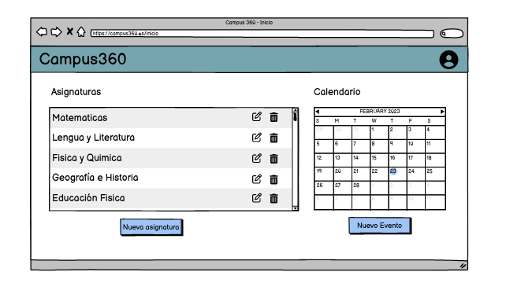Dentor del curso de 3º ESO, con todas sus correspondientes asignaturas. Su gestión se lleva a cabo de la misma manera que la gestion de ciclos y cursos. Dandole al botón Nueva asignatura los administradores crear nuevas asignaturas.
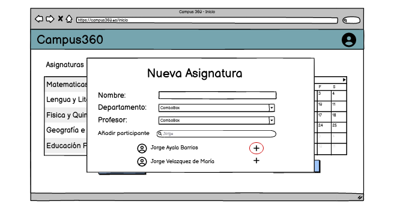En esta pantalla, podemos ver cual es la información requerida para dar de alta una nueva asignatura, el nombre de la asignatura, el departamento al que pertenece, y el profesor que imparte la asignatura, el cual debe pertenece al departamento de la asignatura, por último los alumnos que cursarán la asignatura.
Esta vista se corresponde con la pantalla de inicio de los profesores, a los profesores les aparece la lista de asignaturas que imparten junto con un calendario con todos los eventos que han agendado a sus alumnos en las distintas asignaturas. Haciendo click en el nombre de cualquiera de ellas puede acceder al curso.
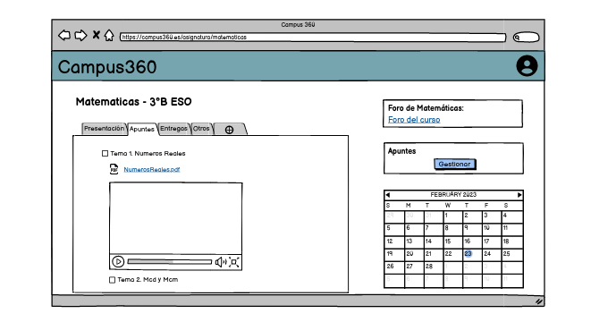Vista del curso para el profesor
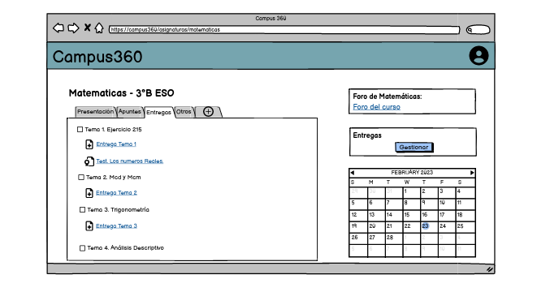Trás el inicio de sesión tanto los alumnos como sus respectivos padres ven la lista de asignaturas en la que los alumnos han sido matriculados y haciendo click en cuaquiera de ellos puede acceder al curso. Además tienen un calendario con los eventos de las diferentes asignaturas.
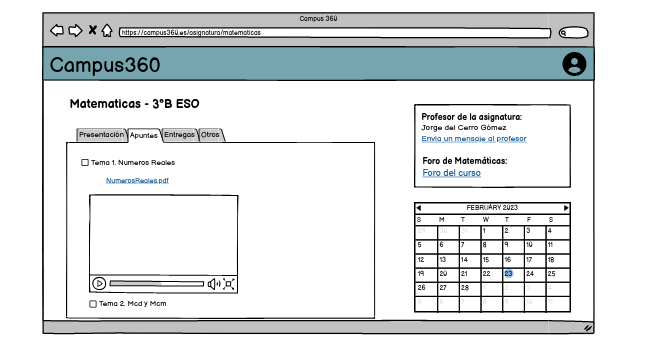Esta el la vista de un curso para los alumnos y padres.
El calendario es accesible para alumnos y padres desde dos lugares diferentes. La pagina de inicio y dentro de cada una de las asignaturas
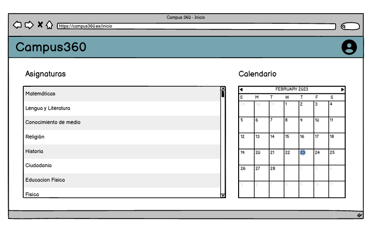Aquí, podemos ver el calendario de la pagina de inicio de sesión, donde podremos ver las taresas pendientes de todas las asignaturas y tambien eventos no relacionados con ninguna asignatura.
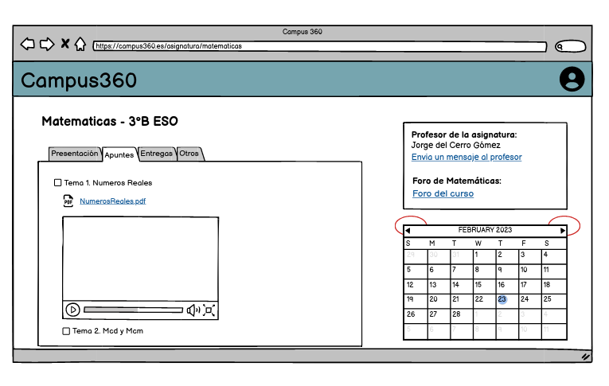Y en esta vista, el calendario perteneciente a una asignatura, que aparece dentro del propio curso. La administración de ambos calendarios es la misma. Se pasa de mes a mes utilizando las flechas el la parte de arriba de el calendario y la única funcionalidad a la que pueden acceder los alumnos y padres es a la consulta de eventos de un día y a la información en detalle a cerca de estos.
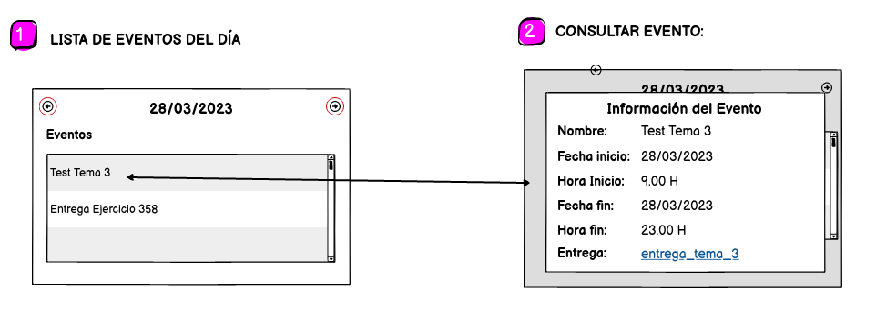Este es el resultado de hacer click en un día del calendario, se trata de una lista con los eventos del día, tambien es posible desplazarse a los eventos de los días contiguos utiizando las flechas superiores. Si hacemos click en un evento podremos ver su información en detalle como aparece en la imagen.
El usario profesor tambien puede acceder a la funcionalidad calendario desde dos ubicaciones la pantalla de inicio y en las asignaturas que imparte. Ambos calendarios se administran de la misma forma
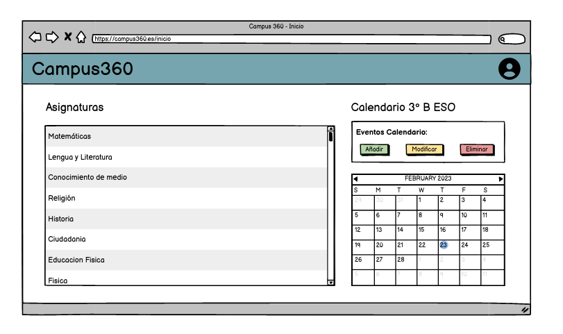El calendario de la pantalla de inicio de sesión para el usuario profesor recoge todas las tareas que el profesor ha mandado en las asignaturas que imparte, así como las que crea desde esta misma ubicación las cuales son recibidas por los alumnos de los que el profesor es tutor (por ejemplo: los alumnos de 3ºB), también puede modificar y eliminar eventos ya programados así como consultar los eventos de un día.
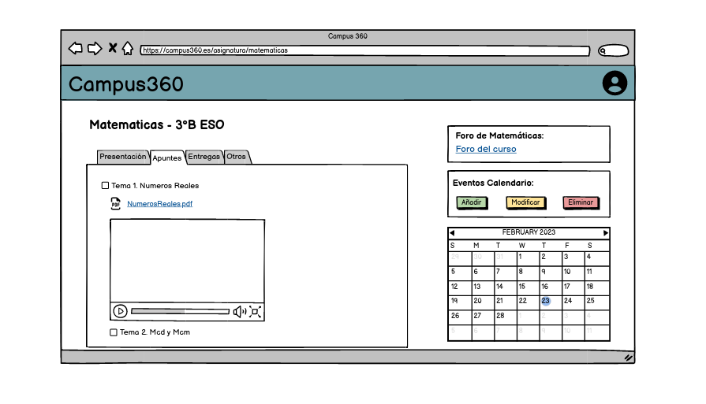Este es el calendario de la asignatura, mismas opciones que en el anterior, la unica diferencia es que los mensajes se dirigen solamente a los alumnos que cursan la asignatura en cuestión
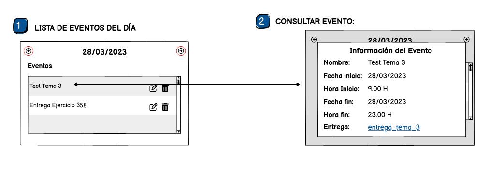De la misma forma que para alumnos y padres si se hace click en un día del calendario, se nos muestra los eventos existentes para ese día, la principal diferecia como la vista de padres y alumnos es la posiblidad de modificar y eliminar eventos existentes. Al hacer click en alguno de ellos podemos obtener información dettada del evento.
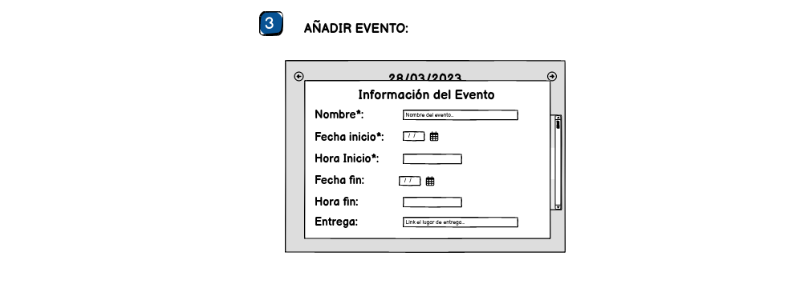Para añadir un nuevo evento se nos solicita toda la información que aparece en la imagen anterior, de toda esta información solo es obligatoria el nombre la fecha y hora de inicio, si la fecha y hora de finalización no se cumplimenta se rellena de forma predeterminada de la siguiente manera (Fecha fin = Fecha ini, Hora fin = Hora ini + 1), si no se añade un link este campo aparecerá vacío
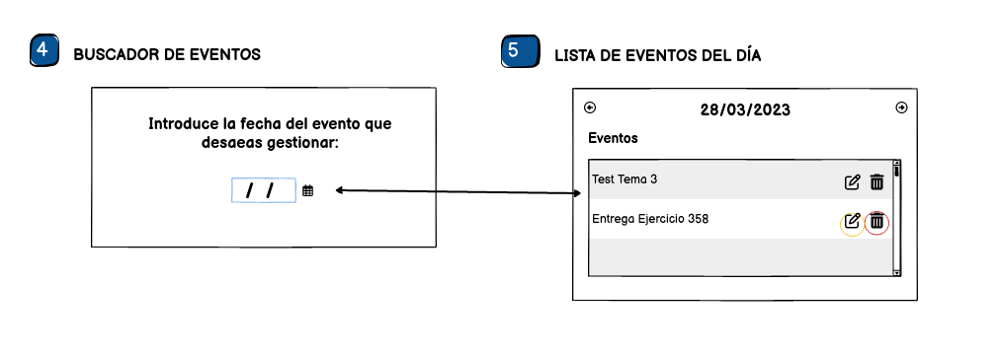Si queremos administrar un evento en concreto muy lejano de la fecha del día de hoy y nos resulta tedioso buscar el día desplazandonos con las flechas del calendario, los botones modificar y eliminar nos simplificarán la tarea dirigiendonos al hacer click en ellos en un buscador de eventos, tras introducir la fecha nos aparece una lista con los eventos agendados para ese día y las opciones de modificar o eliminar cada evento existente en el día.
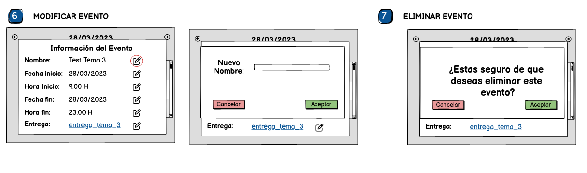Si elegimos el icono de edición nos aparece la ventana de modificación en la que se nos piden los datos y se nos da seguidamente la opción de aceptar o cancelar la operación. Si hemos elegido el icono de eliminar se nos pregunta si realmente estamos seguros y se nos pide aceptar o cancelar la operación.
El usuario administrador solo puede acceder a la función calendario desde el inicio, y gestionará el calendario de la misma forma que el profesor, la unica diferencia es que los destinatarios no estarán establecidos de forma predeterminada sino que el administrador podrá decidir a que ciclos, cursos, clases, alumnos, padres o profesores dirige el evento.
Todos los usuarios de la página pueden acceder a esta funcionalidad de la misma forma y con la misma forma de gestión. La unica diferencia es a quién puede mandar mensajes cada tipo de usuario.
Esta imagen muestra la estructura del foro/chat. En la parte izquierda aparece un buscador y debajo una lista de contactos con todos las personas a las que puede hablar un determinado usuario, todos los foros de asignaturas en las que está matriculado y todos los grupos en los que está. En la parte derecha
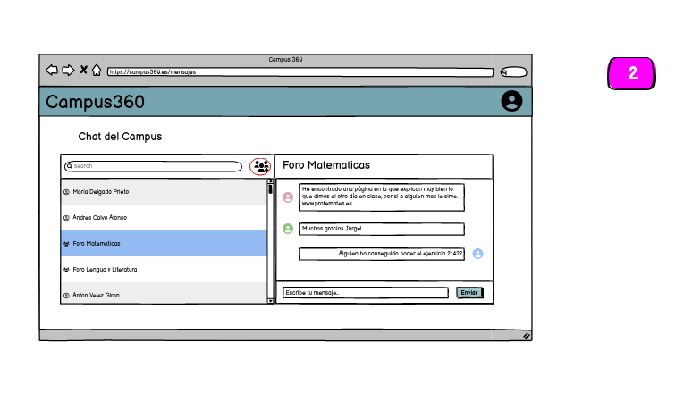Para crear un nuevo grupo hacemos click en el icono rodeado el la imagen
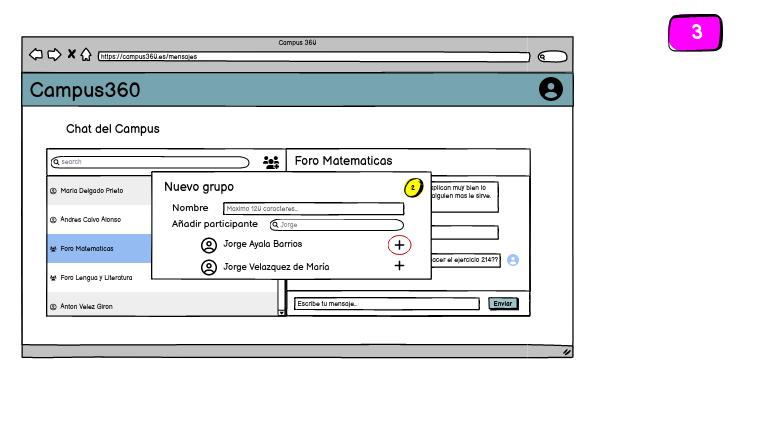Tras hacer click en el icono de crear grupo se nos pide la siguiente información, nombre del grupo y miembros del grupo los cuales podemos localizar dentro de la lista de nuestros contactos, con un sencillo buscador y pulsando el icono "+".
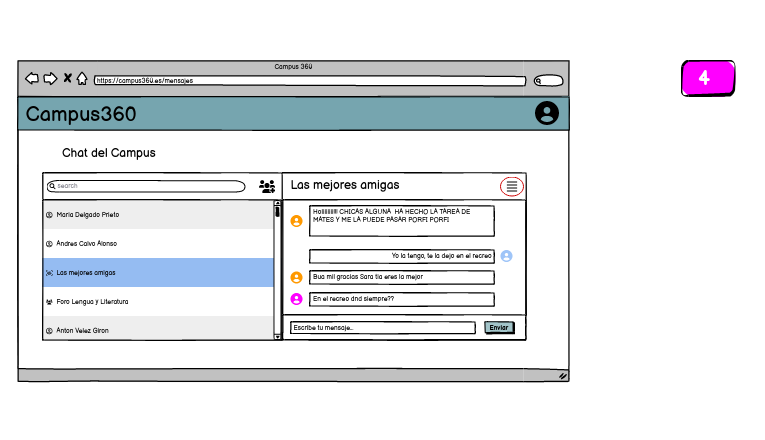Los grupos que no hayan sido creados por un usuario podrán ser gestionados por los usuarios haciendo click en el icono rodeado
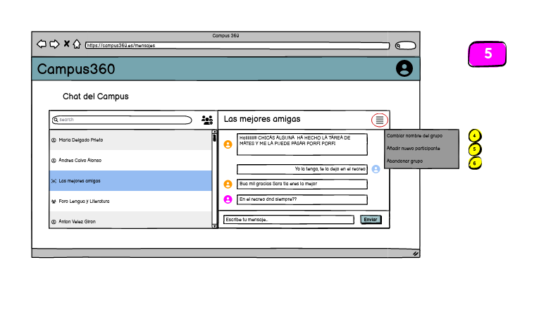Tras hacer click, se nos mostrarán las opciones, Cambiar nombre de grupo, añadir nuevo participante, abandonar grupo
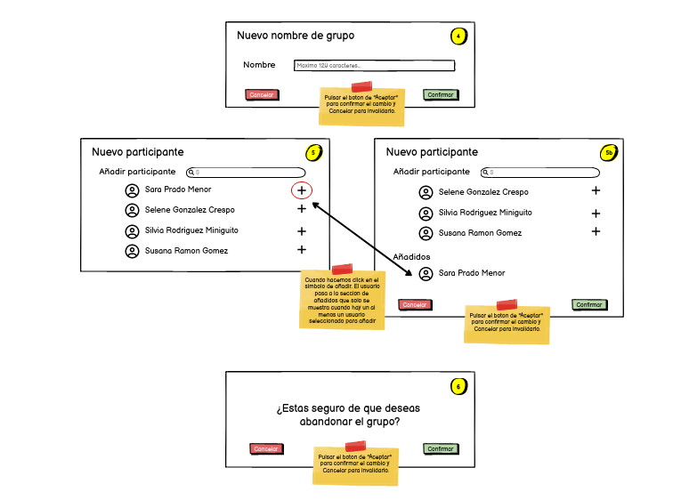Vemos las ventanas que surgen al utilizar alguna de estas opciones, (4) Cambiar nombre de grupo, donde se nos pide el nuevo nombre de grupo y después que aceptemos o cancelemos la operación. (5) Añadir un nuevo participante, en la primera imagen se muestra como se añade un nuevo participante y en la segunda (5b) como queda reflejado que un participante ha sido añadido. (6) Abandonar el grupo donde se nos preguntará si estamos seguros de la operación que vamos a realizar, para evitar posibles errores.
Hemos dividido esta funcionalidad en 3 apartados Calificaciones, Entregas y Material
Desde el apartado de entregas dentro de una asignatura, al hacer click en alguno de los links el alumno puede acceder a esta entrega
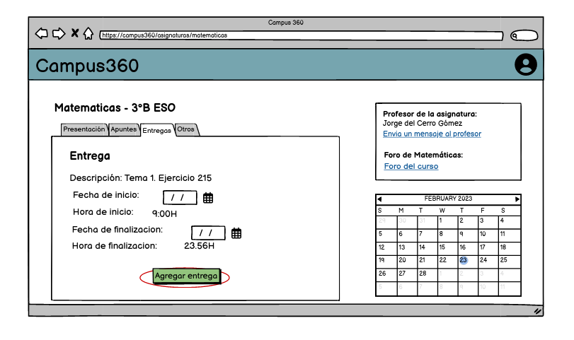En la entrega al alumno se le proporciona tanto información relacionada con esta como la descripción, las fechas de inicio y fin, asi como la opción de añadir una nueva entrega haciendo click en agregando entrega y proporcionado el archivo a entregar. Un alumno puede subir tantas entregas como desee, en caso de que no disponga lo contrario, el profesor tendra en cuenta la última entrega para realizar la calificación de la entrega.
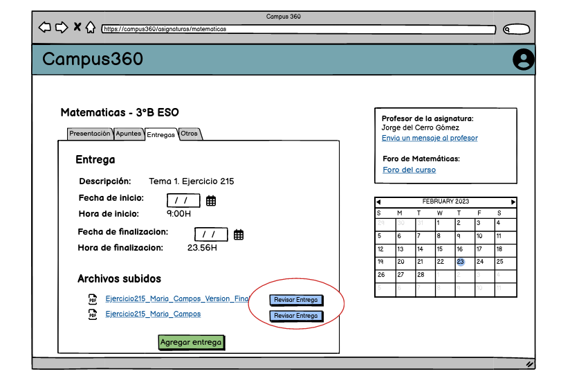En esta imagen se puede ver el resultado de haber añadido varias entregas. El alumno puede consultar el estado de la calificación PENDIENTE DE REVISION/REVISADO haciendo click en el botón resaltado en la imagen.
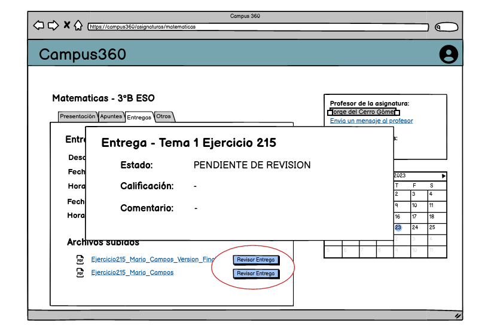Desde aquí se puede revisar el estado de la entrega, asi como la calificación y el comentario asociado en caso de estar disiponible.
Los padres tienen la misma vista de las asignaturas en las que están matriculados sus hijos.
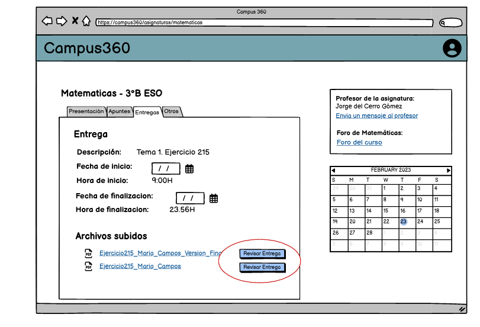Los padres pueden revisar de la misma manera las entregas de sus hijos haciendo click en "Revisar entrega", pero a diferencia de estos no pueden añadir entregas.
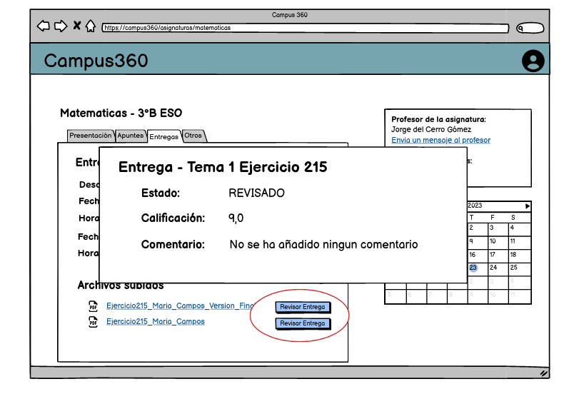Al hacer click, se obtiene la información de la calificación, estado, nombre y comentario, el comentario es opcional, en caso de no añadir comentario aparecera el mensaje "No se ha añadido ningun comentario".
Vista del profesor de la asignatura, donde aparecen tambien las entregas que el ha creado, para acceder a la gestion de entregas hay que hacer click en el boton "Gestionar", desde donde se podrán crear, modificar y eliminar entregas. Haciendo click en un link accede a la entrega asociada.
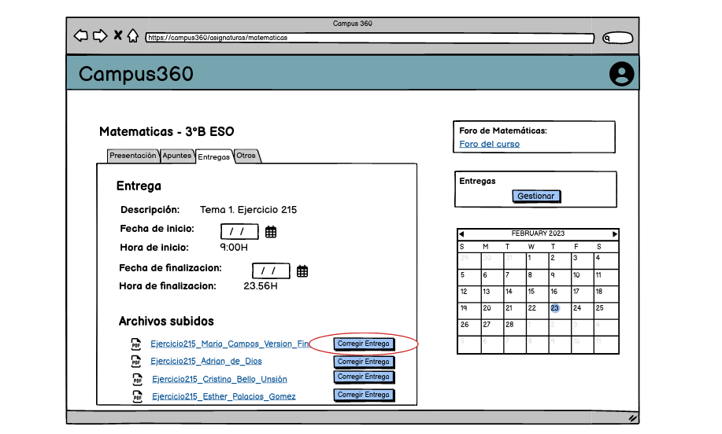En las entregas de los profesores podemos ver la información y todas las entregas que han sido subidas por los alumnos. El profesor puede revisar desde aquí las entregas y corregirlas, haciendo click en "Revisar entrega" Los profesores no pueden añadir nuevas entregas.
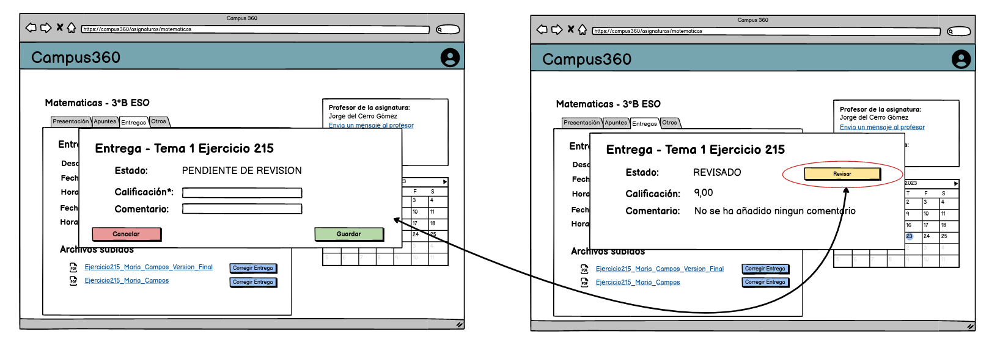Desde aquí el profesor puede calificar las entregas y añadirles un comentario opcional. Para que el resultado se guarde ha de hacer click en "Aceptar" o en "Cancelar" para salir. Si la operación es guardada, (imagen 2) el estado cambiara a REVISADO y se mostrará la nota y comentario asociados. Para modificar la nota hacer click en "Revisar" que nos devolverá a la imagen 1 donde se nos solicita de nuevo la información.
Este usuario tiene ninguna pantalla desde la que pueda realizar modificaciones en entregas, esta responsabilidad recae en los profesores
Los alumnos y su padres pueden ver las asignaturas en las que los alumnos están matriculados nada más acceder al apartado de calificaciones y hacer click en alguna de estas para ver las calificaciones de la asignatura
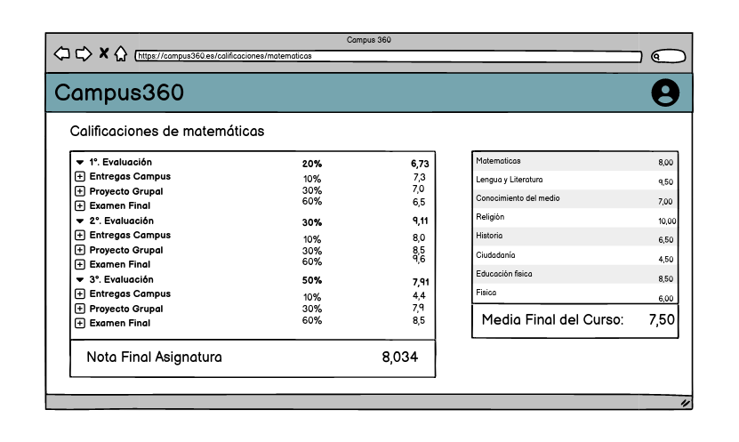Se muestran las diferentes evaluaciones y sus porcentajes asociados, junto a la calificación de cada evaluación, que se obtiene haciendo la media ponderada de cada entrega de la evaluación, la media de la asignatura se construye con la media ponderada de las 3 evaluaciones y sus porcentajes. A la derecha tambien podemos ver un resumen de la nota de cada asignatura y la media final del curso que se calcula haciendo la media con todas las asignaturas del curso.
La pagina incial de calficaciones es la misma para el profesor que para alumnos y padres, apareciendole al profesor las asignaturas que imparte
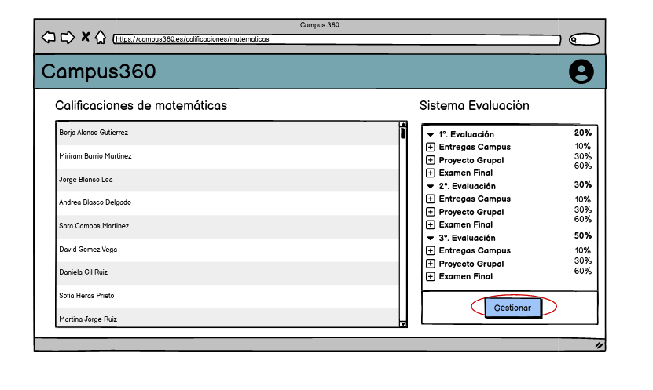Cuando el profesor accede a una asignatura le aparece a la derecha el listado de alumnos de la asignatura que utilizará para gestionar notas, y a la izquierda se muestra el sistema de evaluacion de la asignatura asi como la opcion de gestionarlo haciendo click en el boton "Gestionar"
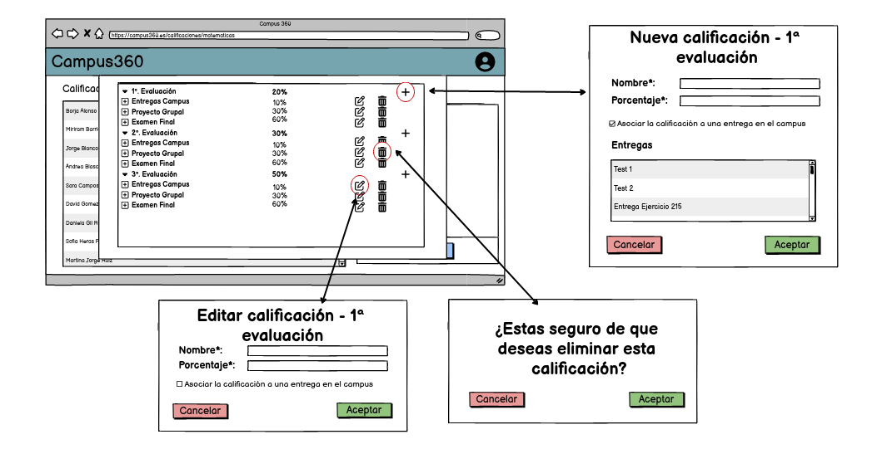Desde aquí el profesor podrá crear nuevas entregas o modificar y eliminar las ya existentes. Las entregas pueden estar vinculadas a la nota de alguna entrega para indicarlo marcar la checkbox y elegir entre el listado la entrega que se desea vincular
Tras hacer click en un nombre de la lista de alunos de la asignatura profesor puede editar sus notas notas
Este usuario tiene ninguna pantalla desde la que pueda realizar modificaciones en calificaciones de asignaturas, esta responsabilidad recae en los profesores
Esto es lo que se muestra al padre y al alumno en un curso y pueden acceder a todos lo contenidos, descargar archivos, ver videos, imagenes, descripciones, realizar entregas... Además tiene dos links directos a la funcionalidad de mensajería uno que se abre para enviar mensaje al profesor y otro para ir al foro de la asignatura.
El profesor puede añadir nuevas secciones a la asignatura como "Apuntes" o "Entregas" haciendo click en la pestaña que tiene el simbolo +, además puede añadir eliminar y modificar el contenido de cada sección, haciendo click en el boton "Gestionar" en el apartado que lleva el nombre de la sección.
Este usuario tiene ninguna pantalla desde la que pueda realizar modificaciones de asignaturas, esta responsabilidad recae en los profesores